Landscape design is an artful choreography of crafting outdoor spaces, providing a blank canvas for the designer’s philosophical expressions. From the meticulously manicured lawns and symmetrical water features of the Mughal Gardens to the bold, avant-garde designs seen in modernist landscapes across India, it serves as a dynamic instrument for communicating the varied relationships between man and nature.
GoodEarth’s approach
At the heart of our designs at GoodEarth, lies a simple yet powerful idea: to capture the essence of nature itself. For us, it’s not merely about shaping the land to fit our vision, but rather about listening to the land, understanding its rhythms and flows, and working in harmony with it to create spaces that feel truly alive. It’s about forging a connection – not just between people and their surroundings, but between all living things, holistically fostering a sense of coexistence and mutual respect.
In order to do so, we try to imbibe natural materials, organic palette and landscapes that not only help break the linearity of the built but also evolve with nature and time, allowing people to meander and connect, pause and reflect.
In this series, let’s understand the various ways the materials help encapsulate this sentiment.
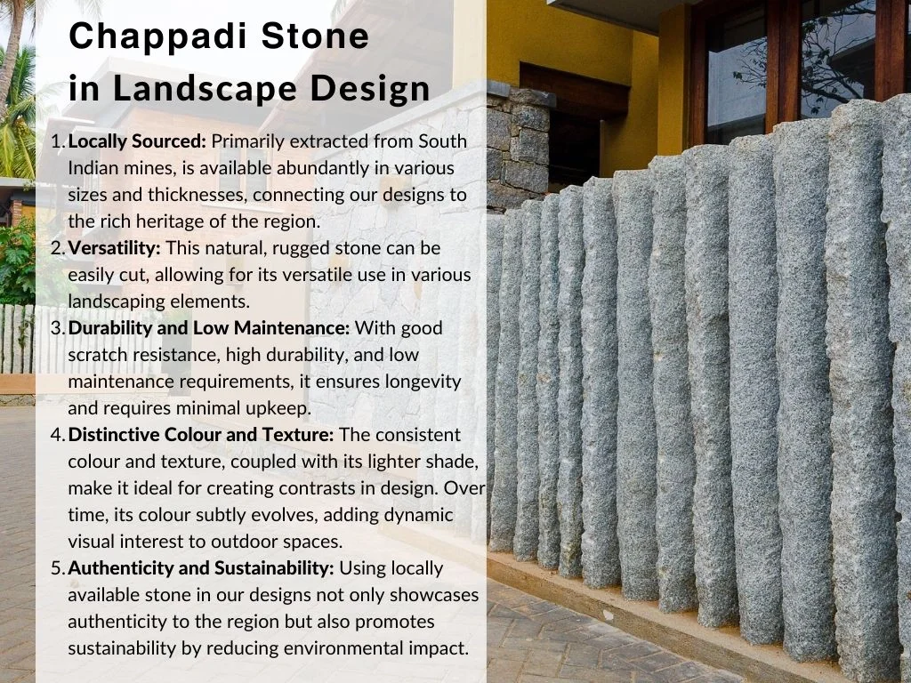
Chappadi stone, a natural granite renowned for its unwavering strength and durability is a local gem sourced from the mines in south India. Named after the Chappadi village in Tamil Nadu, this humble material has woven itself into the fabric of history, gracing structures with its timeless presence through the ages.
Today, it’s a familiar sight in outdoor spaces, where its resilience against harsh weather conditions shines. Yet, amidst its widespread functional use, one aspect has remained largely unexplored – its potential for aesthetic innovation. Through our projects, let us take a look at the versatile use of the Chappadi stone that goes beyond its traditional utility and demonstrate how it can be used to create beautiful design elements.
01. Seating
A large slab of Chappadi stone, placed as a bench either mounted on boulders or set atop a mound, offers an earthy texture with its natural finish. Its solid presence creates a feeling of permanence and blends seamlessly with the surroundings.
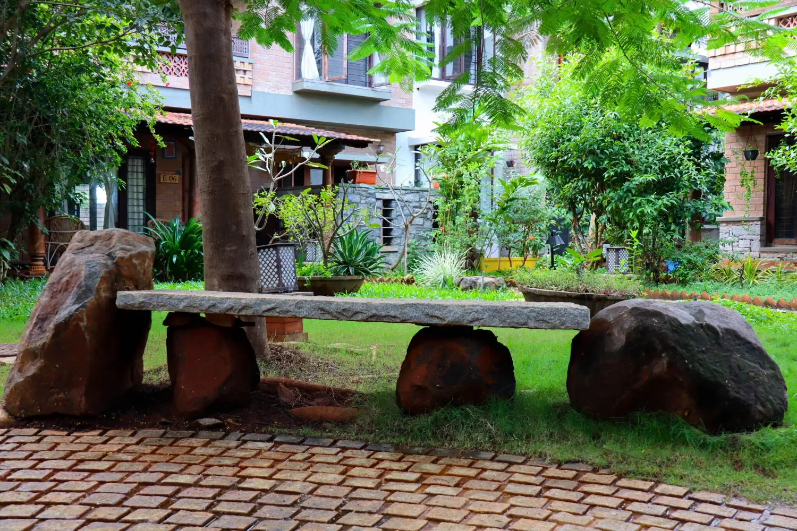
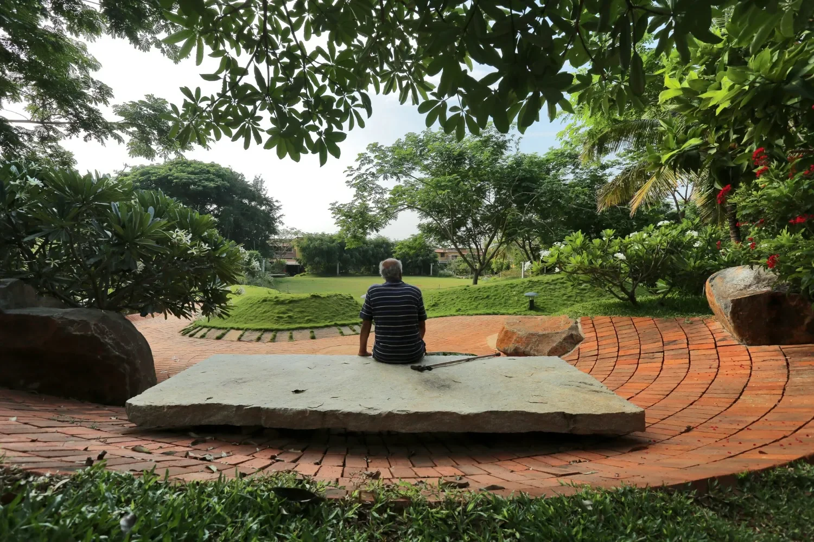
02. Wall Screens
Vertical slabs used intermittently as partitions harmoniously contrast with surrounding elements such as mud blocks, wood, or the lush greenery, creating an eclectic mix of textures. The natural finish of the granite naturally blends with other materials, enhancing the overall aesthetic.
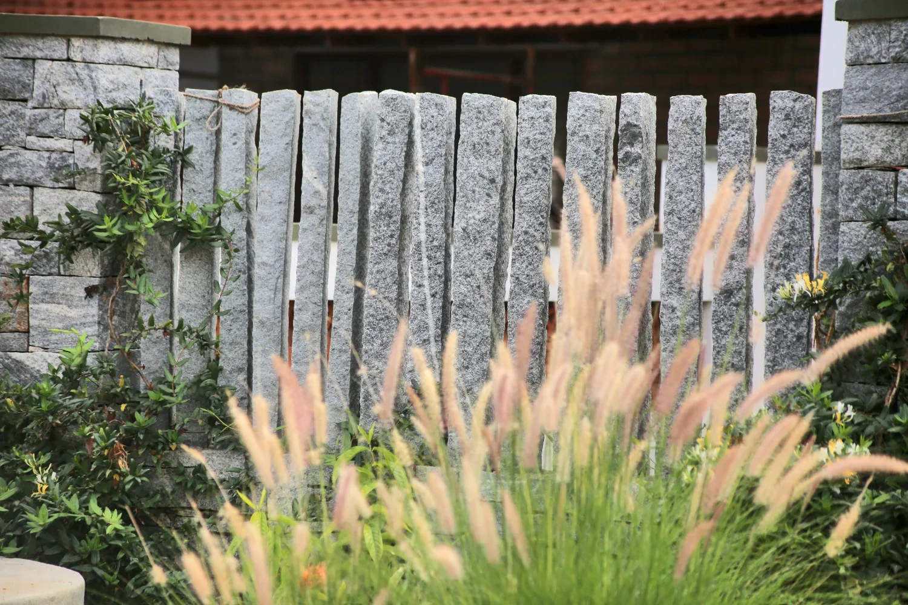
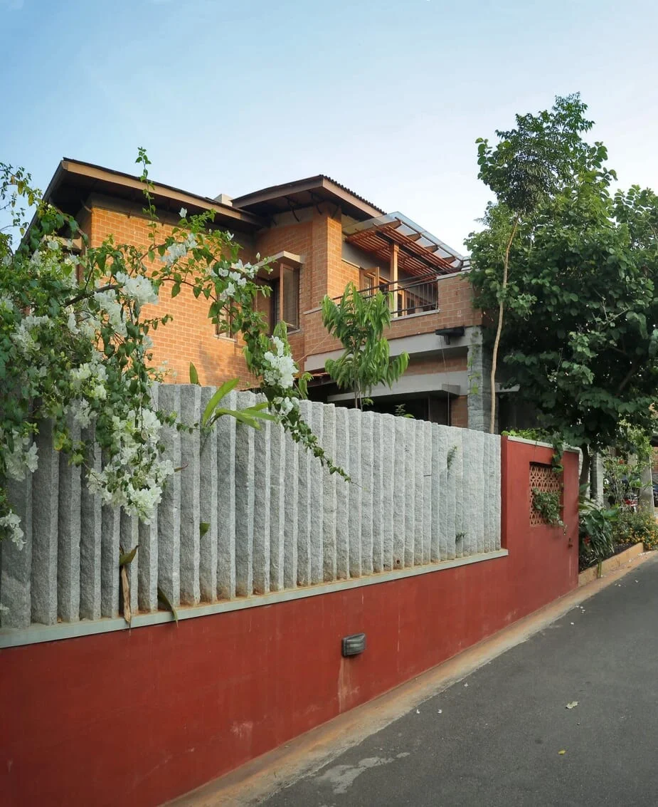
03. Composite Walls
While integral to the built environment, these composite walls, stacked horizontally with cement mortar joints, serve a dual purpose. They provide a higher plinth, contrasting effectively with the earthen blocks, and contribute to the cohesive visual aesthetic by harmonizing with other stone accents scattered throughout the landscape.
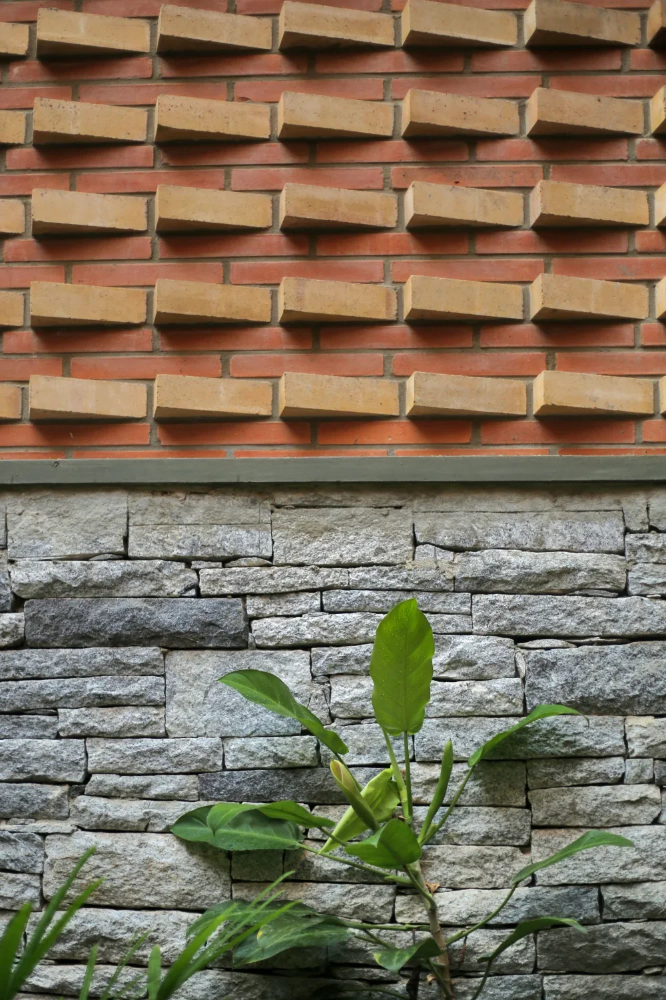
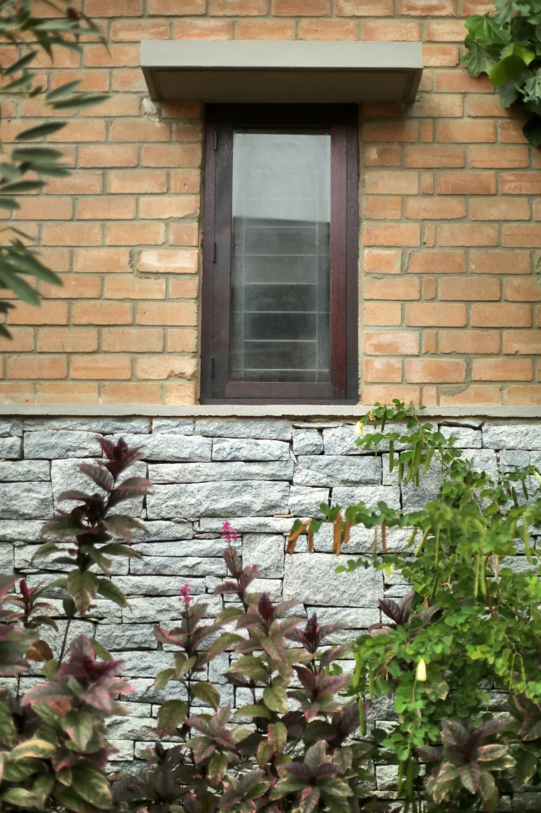
04. Pavements/Pathways
Chappadi stones are incorporated into pavements and pathways in various ways, either embedded in grass with organic shapes or cut into rectangular slabs and arranged in creative patterns for walkways. Their durability and resistance make them an ideal choice for outdoor use, ensuring longevity and aesthetic appeal.
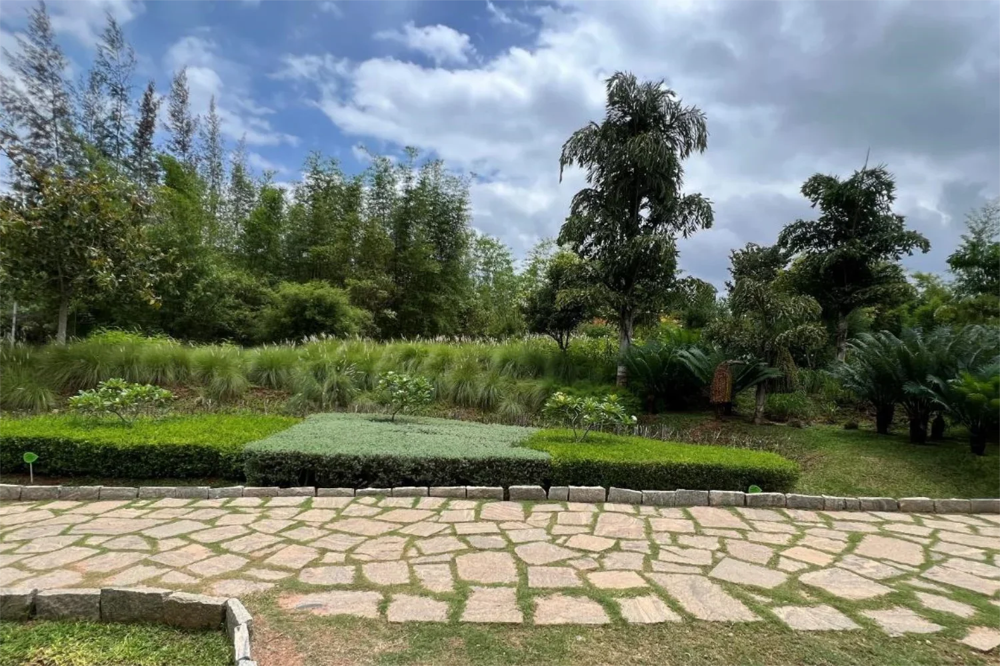
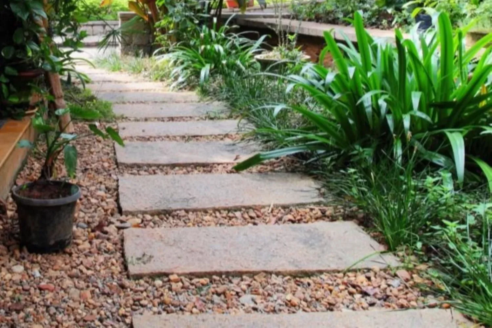
05. Steps
Whether as single slabs used as treads or smaller blocks stacked in masonry, Chappadi stone steps exude a rustic charm. Over time, their weathered appearance adds character to outdoor spaces with a classic appeal.

06. Entrance Feature
At Resonance, the entrance mound is adorned with rain trees and large slabs of Chappadi stones, evoking the rugged beauty of rocky mountain peaks and instilling a rustic charm with a profound sense of time. The stones, intricately integrated into the mound, serve both structural and aesthetic purposes. Its natural texture and earthy hues effortlessly blend with the surrounding landscape, creating an atmosphere of tranquillity and eternal beauty. Moreover, the design is intentionally intriguing, featuring a cobbled stone pathway leading to the large mound which initially obstructs the view, creating a sense of intrigue and discovery of hidden vistas.
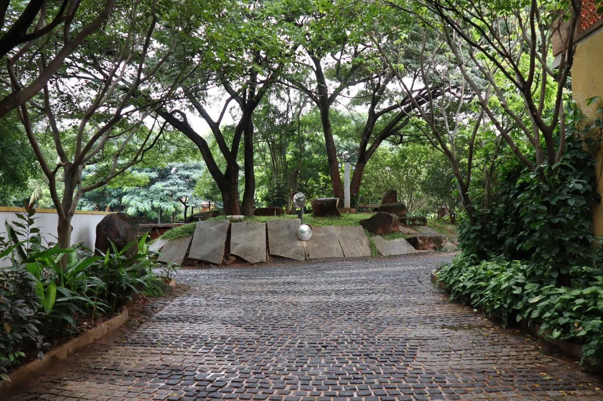
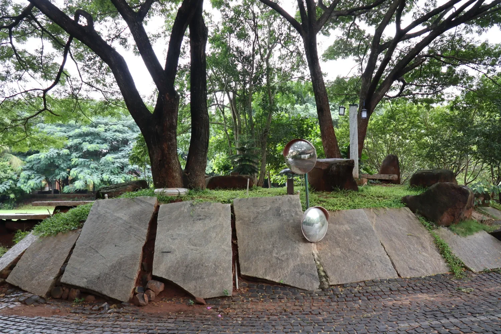
Chappadi stone, thus, reveals itself as a versatile medium for artistic expression, offering not only durability but also an everlasting elegance that transcends mere utility. By honouring the inherent qualities of materials and working in harmony with nature, we can create spaces that not only serve a functional purpose but also evoke a sense of wonder, connection, and quietude.